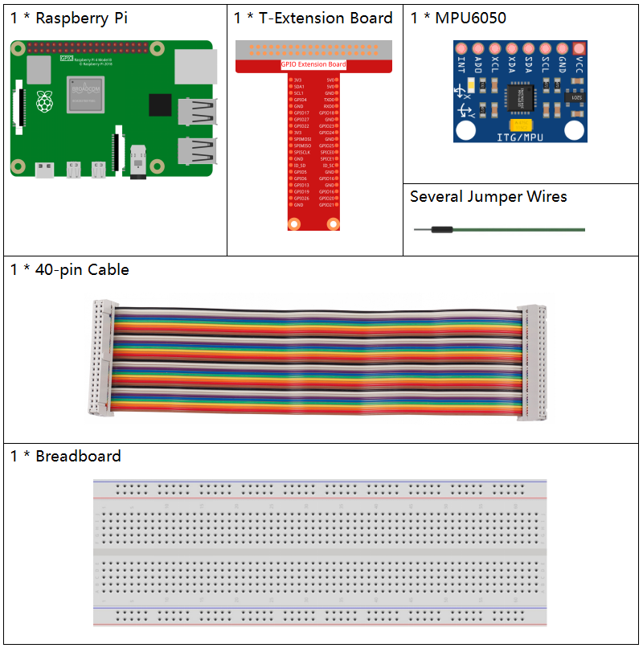
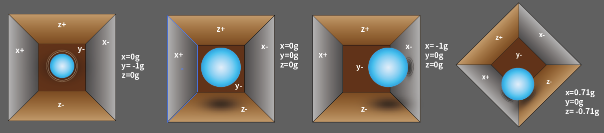
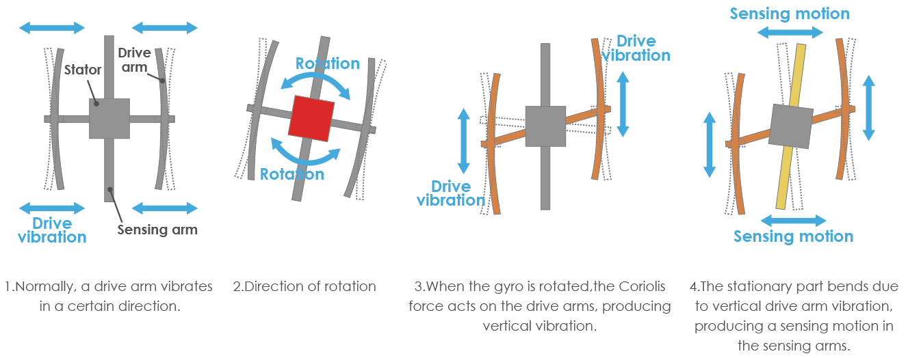

Nota
¡Hola! Bienvenido a la comunidad de entusiastas de SunFounder Raspberry Pi, Arduino y ESP32 en Facebook. Profundiza en el uso de Raspberry Pi, Arduino y ESP32 con otros entusiastas.
¿Por qué unirte?
Soporte de expertos: Resuelve problemas postventa y desafíos técnicos con la ayuda de nuestra comunidad y equipo.
Aprende y comparte: Intercambia consejos y tutoriales para mejorar tus habilidades.
Vistas exclusivas: Obtén acceso anticipado a anuncios de nuevos productos y adelantos exclusivos.
Descuentos especiales: Disfruta de descuentos exclusivos en nuestros productos más recientes.
Promociones y sorteos festivos: Participa en sorteos y promociones de temporada.
👉 ¿Listo para explorar y crear con nosotros? Haz clic en [Aquí] y únete hoy.
Módulo 2.2.6 MPU6050
Introducción
El MPU-6050 es el primer y único dispositivo de seguimiento de movimiento de 6 ejes (giroscopio de 3 ejes y acelerómetro de 3 ejes) diseñado para smartphones, tablets y sensores portátiles que requieren bajo consumo, bajo costo y alto rendimiento.
En este experimento, utilizaremos I2C para obtener los valores del sensor de aceleración de tres ejes y del giroscopio de tres ejes del MPU6050, y los mostraremos en pantalla.
Componentes
Principio
MPU6050
El MPU-6050 es un dispositivo de seguimiento de movimiento de 6 ejes (combina giroscopio de 3 ejes y acelerómetro de 3 ejes).
Sus tres sistemas de coordenadas están definidos de la siguiente manera:
Coloca el MPU6050 plano sobre una mesa, asegurando que la cara con la etiqueta esté hacia arriba y el punto en la esquina superior izquierda. La dirección vertical hacia arriba es el eje Z del chip. La dirección de izquierda a derecha se considera el eje X, y de atrás hacia adelante es el eje Y.

Acelerómetro de 3 ejes
El acelerómetro funciona mediante el efecto piezoeléctrico, la capacidad de ciertos materiales para generar una carga eléctrica en respuesta a una tensión mecánica aplicada.
Imagina una caja rectangular con una pequeña bola dentro, como en la imagen. Las paredes de esta caja están hechas de cristales piezoeléctricos. Cuando inclinas la caja, la bola se mueve en la dirección de la inclinación debido a la gravedad. La pared con la que colisiona la bola genera pequeñas corrientes piezoeléctricas. Cada par de paredes opuestas representa un eje en el espacio 3D: ejes X, Y y Z. Según la corriente generada, se determina la dirección y magnitud de la inclinación.
Podemos utilizar el MPU6050 para detectar la aceleración en cada eje (en estado estacionario, la aceleración en el eje Z es 1 unidad de gravedad, y en los ejes X e Y es 0). Si se inclina o está en condiciones de peso cero o sobrepeso, la lectura correspondiente cambiará.
Hay cuatro rangos de medición seleccionables programáticamente: +/-2g, +/-4g, +/-8g y +/-16g (por defecto es 2g), con valores de -32768 a 32767.
La lectura del acelerómetro se convierte en valor de aceleración mapeando el rango de lecturas al rango de medición.
Aceleración = (Lectura cruda del eje del acelerómetro / 65536 * Rango de aceleración total) g
Ejemplo en el eje X: cuando la lectura del acelerómetro en el eje X es 16384 y el rango es +/-2g:
Aceleración en el eje X = (16384 / 65536 * 4) g = 1g
Giroscopio de 3 ejes
Los giroscopios operan bajo el principio de la aceleración de Coriolis. Imagina una estructura similar a un tenedor en constante movimiento de vaivén, sostenida por cristales piezoeléctricos. Cuando intentas inclinar esta disposición, los cristales experimentan una fuerza en la dirección de la inclinación, generando una corriente según el efecto piezoeléctrico, y esta corriente se amplifica.
{kind=link}
El giroscopio también tiene cuatro rangos de medición: +/- 250, +/- 500, +/- 1000, +/- 2000. El método de cálculo es similar al del acelerómetro.
La fórmula para convertir la lectura en velocidad angular es:
Velocidad angular = (Lectura cruda del eje del giroscopio / 65536 * Rango total del giroscopio) °/s
Ejemplo en el eje X: cuando la lectura cruda en el eje X es 16384 y el rango es +/- 250°/s:
Velocidad angular en el eje X = (16384 / 65536 * 500)°/s = 125°/s
Diagrama de Circuito
El MPU6050 se comunica con el microcontrolador mediante la interfaz de bus I2C. Los pines SDA1 y SCL1 deben conectarse al pin correspondiente.

Procedimiento Experimental
Paso 1: Construye el circuito.

Paso 2: Configura I2C (ver Apéndice. Si ya configuraste I2C, omite este paso).
Para Usuarios de C
Paso 3: Ve a la carpeta del código.
cd ~/davinci-kit-for-raspberry-pi/c/2.2.6/
Paso 4: Compila el código.
gcc 2.2.6_mpu6050.c -lwiringPi -lm
Paso 5: Ejecuta el archivo.
sudo ./a.out
Al ejecutar el código, el ángulo de desviación en los ejes X e Y, junto con la aceleración y velocidad angular en cada eje medida por el MPU6050, se mostrará en pantalla después de ser calculada.
Nota
Si no funciona después de ejecutar el código, o si aparece un mensaje de error como: "wiringPi.h: No such file or directory", consulta la sección c code is not working?.
Explicación del Código
#include <wiringPiI2C.h>
#include <wiringPi.h>
#include <stdio.h>
#include <math.h>
int fd;
int acclX, acclY, acclZ;
int gyroX, gyroY, gyroZ;
double acclX_scaled, acclY_scaled, acclZ_scaled;
double gyroX_scaled, gyroY_scaled, gyroZ_scaled;
int read_word_2c(int addr)
{
int val;
val = wiringPiI2CReadReg8(fd, addr);
val = val << 8;
val += wiringPiI2CReadReg8(fd, addr+1);
if (val >= 0x8000)
val = -(65536 - val);
return val;
}
double dist(double a, double b)
{
return sqrt((a*a) + (b*b));
}
double get_y_rotation(double x, double y, double z)
{
double radians;
radians = atan2(x, dist(y, z));
return -(radians * (180.0 / M_PI));
}
double get_x_rotation(double x, double y, double z)
{
double radians;
radians = atan2(y, dist(x, z));
return (radians * (180.0 / M_PI));
}
int main()
{
fd = wiringPiI2CSetup (0x68);
wiringPiI2CWriteReg8 (fd,0x6B,0x00); // desactivar el modo de suspensión
printf("set 0x6B=%X\n",wiringPiI2CReadReg8 (fd,0x6B));
while(1) {
gyroX = read_word_2c(0x43);
gyroY = read_word_2c(0x45);
gyroZ = read_word_2c(0x47);
gyroX_scaled = gyroX / 131.0;
gyroY_scaled = gyroY / 131.0;
gyroZ_scaled = gyroZ / 131.0;
// Imprimir los valores de los ejes X, Y y Z del sensor de giroscopio.
printf("My gyroX_scaled: %f\n", gyroY X_scaled);
delay(100);
printf("My gyroY_scaled: %f\n", gyroY Y_scaled);
delay(100);
printf("My gyroZ_scaled: %f\n", gyroY Z_scaled);
delay(100);
acclX = read_word_2c(0x3B);
acclY = read_word_2c(0x3D);
acclZ = read_word_2c(0x3F);
acclX_scaled = acclX / 16384.0;
acclY_scaled = acclY / 16384.0;
acclZ_scaled = acclZ / 16384.0;
// Imprimir los valores X, Y y Z del sensor de aceleración.
printf("My acclX_scaled: %f\n", acclX_scaled);
delay(100);
printf("My acclY_scaled: %f\n", acclY_scaled);
delay(100);
printf("My acclZ_scaled: %f\n", acclZ_scaled);
delay(100);
printf("My X rotation: %f\n", get_x_rotation(acclX_scaled, acclY_scaled, acclZ_scaled));
delay(100);
printf("My Y rotation: %f\n", get_y_rotation(acclX_scaled, acclY_scaled, acclZ_scaled));
delay(100);
delay(100);
}
return 0;
}
Explicación del Código
int read_word_2c(int addr)
{
int val;
val = wiringPiI2CReadReg8(fd, addr);
val = val << 8;
val += wiringPiI2CReadReg8(fd, addr+1);
if (val >= 0x8000)
val = -(65536 - val);
return val;
}
Lee los datos del sensor enviados desde el MPU6050.
double get_y_rotation(double x, double y, double z)
{
double radians;
radians = atan2(x, dist(y, z));
return -(radians * (180.0 / M_PI));
}
Obtiene el ángulo de deflexión en el eje Y.
double get_x_rotation(double x, double y, double z)
{
double radians;
radians = atan2(y, dist(x, z));
return (radians * (180.0 / M_PI));
}
Calcula el ángulo de deflexión en el eje X.
gyroX = read_word_2c(0x43);
gyroY = read_word_2c(0x45);
gyroZ = read_word_2c(0x47);
gyroX_scaled = gyroX / 131.0;
gyroY_scaled = gyroY / 131.0;
gyroZ_scaled = gyroZ / 131.0;
// Imprime los valores de los ejes X, Y y Z del sensor de giroscopio.
printf("My gyroX_scaled: %f\n", gyroY X_scaled);
printf("My gyroY_scaled: %f\n", gyroY Y_scaled);
printf("My gyroZ_scaled: %f\n", gyroY Z_scaled);
Lee los valores de los ejes x, y y z en el sensor de giroscopio, convierte los datos en valores de velocidad angular y luego los imprime.
acclX = read_word_2c(0x3B);
acclY = read_word_2c(0x3D);
acclZ = read_word_2c(0x3F);
acclX_scaled = acclX / 16384.0;
acclY_scaled = acclY / 16384.0;
acclZ_scaled = acclZ / 16384.0;
// Imprime los valores de los ejes X, Y y Z del sensor de aceleración.
printf("My acclX_scaled: %f\n", acclX_scaled);
printf("My acclY_scaled: %f\n", acclY_scaled);
printf("My acclZ_scaled: %f\n", acclZ_scaled);
Lee los valores de los ejes x, y y z en el sensor de aceleración, convierte los datos en valores de velocidad de aceleración (unidad de gravedad), y luego los imprime.
printf("My X rotation: %f\n", get_x_rotation(acclX_scaled, acclY_scaled, acclZ_scaled));
printf("My Y rotation: %f\n", get_y_rotation(acclX_scaled, acclY_scaled, acclZ_scaled));
Imprime los ángulos de deflexión de los ejes x e y.
Para Usuarios de Python
Paso 3: Ve a la carpeta del código.
cd ~/davinci-kit-for-raspberry-pi/python
Paso 4: Ejecuta el archivo ejecutable.
sudo python3 2.2.6_mpu6050.py
Con el código en ejecución, el ángulo de deflexión de los ejes x e y, así como la aceleración y la velocidad angular en cada eje obtenidos por el MPU6050, se mostrarán en la pantalla después de calcularse.
Código
Nota
Puedes Modificar/Restablecer/Copiar/Ejecutar/Detener el código a
continuación. Pero antes de hacerlo, debes dirigirte a la ruta del
código fuente, como davinci-kit-for-raspberry-pi/python.
import smbus
import math
import time
# Registros de administración de energía
power_mgmt_1 = 0x6b
power_mgmt_2 = 0x6c
def read_byte(adr):
return bus.read_byte_data(address, adr)
def read_word(adr):
high = bus.read_byte_data(address, adr)
low = bus.read_byte_data(address, adr+1)
val = (high << 8) + low
return val
def read_word_2c(adr):
val = read_word(adr)
if (val >= 0x8000):
return -((65535 - val) + 1)
else:
return val
def dist(a,b):
return math.sqrt((a*a)+(b*b))
def get_y_rotation(x,y,z):
radians = math.atan2(x, dist(y,z))
return -math.degrees(radians)
def get_x_rotation(x,y,z):
radians = math.atan2(y, dist(x,z))
return math.degrees(radians)
bus = smbus.SMBus(1) # o bus = smbus.SMBus(1) para placas de la Revisión 2
address = 0x68 # Este es el valor de la dirección leído mediante el comando i2cdetect
# Ahora activa el 6050 ya que comienza en modo de suspensión
bus.write_byte_data(address, power_mgmt_1, 0)
while True:
time.sleep(0.1)
gyro_xout = read_word_2c(0x43)
gyro_yout = read_word_2c(0x45)
gyro_zout = read_word_2c(0x47)
print ("gyro_xout : ", gyro_xout, " scaled: ", (gyro_xout / 131))
print ("gyro_yout : ", gyro_yout, " scaled: ", (gyro_yout / 131))
print ("gyro_zout : ", gyro_zout, " scaled: ", (gyro_zout / 131))
accel_xout = read_word_2c(0x3b)
accel_yout = read_word_2c(0x3d)
accel_zout = read_word_2c(0x3f)
accel_xout_scaled = accel_xout / 16384.0
accel_yout_scaled = accel_yout / 16384.0
accel_zout_scaled = accel_zout / 16384.0
print ("accel_xout: ", accel_xout, " scaled: ", accel_xout_scaled)
print ("accel_yout: ", accel_yout, " scaled: ", accel_yout_scaled)
print ("accel_zout: ", accel_zout, " scaled: ", accel_zout_scaled)
print ("x rotation: " , get_x_rotation(accel_xout_scaled, accel_yout_scaled, accel_zout_scaled))
print ("y rotation: " , get_y_rotation(accel_xout_scaled, accel_yout_scaled, accel_zout_scaled))
time.sleep(0.5)
Explicación del Código
def read_word(adr):
high = bus.read_byte_data(address, adr)
low = bus.read_byte_data(address, adr+1)
val = (high << 8) + low
return val
def read_word_2c(adr):
val = read_word(adr)
if (val >= 0x8000):
return -((65535 - val) + 1)
else:
return val
Lee los datos del sensor enviados desde el MPU6050.
def get_y_rotation(x,y,z):
radians = math.atan2(x, dist(y,z))
return -math.degrees(radians)
Calcula el ángulo de deflexión en el eje y.
def get_x_rotation(x,y,z):
radians = math.atan2(y, dist(x,z))
return math.degrees(radians)
Calcula el ángulo de deflexión en el eje x.
gyro_xout = read_word_2c(0x43)
gyro_yout = read_word_2c(0x45)
gyro_zout = read_word_2c(0x47)
print ("gyro_xout : ", gyro_xout, " scaled: ", (gyro_xout / 131))
print ("gyro_yout : ", gyro_yout, " scaled: ", (gyro_yout / 131))
print ("gyro_zout : ", gyro_zout, " scaled: ", (gyro_zout / 131))
Lee los valores de los ejes x, y y z en el sensor de giroscopio, convierte los datos en valores de velocidad angular y luego los imprime.
accel_xout = read_word_2c(0x3b)
accel_yout = read_word_2c(0x3d)
accel_zout = read_word_2c(0x3f)
accel_xout_scaled = accel_xout / 16384.0
accel_yout_scaled = accel_yout / 16384.0
accel_zout_scaled = accel_zout / 16384.0
print ("accel_xout: ", accel_xout, " scaled: ", accel_xout_scaled)
print ("accel_yout: ", accel_yout, " scaled: ", accel_yout_scaled)
print ("accel_zout: ", accel_zout, " scaled: ", accel_zout_scaled)
Lee los valores de los ejes x, y y z en el sensor de aceleración, convierte los datos en valores de velocidad de aceleración (unidad de gravedad) y luego los imprime.
print ("x rotation: " , get_x_rotation(accel_xout_scaled, accel_yout_scaled, accel_zout_scaled))
print ("y rotation: " , get_y_rotation(accel_xout_scaled, accel_yout_scaled, accel_zout_scaled))
Imprime los ángulos de deflexión de los ejes x e y.